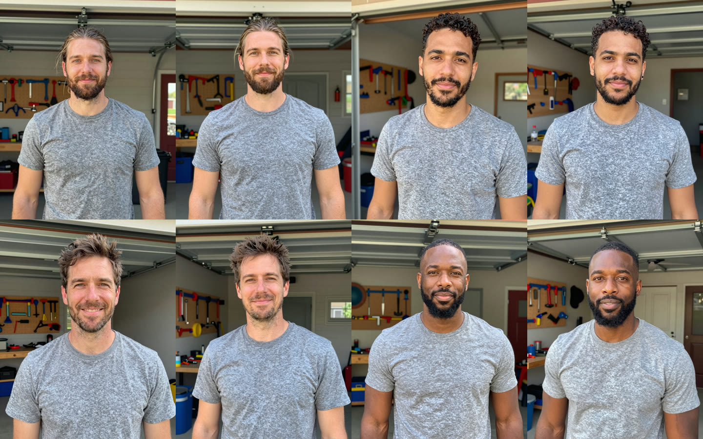

Pick ONE face — he will be the same man in every video
Two takes of each person. Tell me the letter (A, B, C or D). Clothes change per video; the face, hair and beard stay.

ABCD| A | White American, ~30, long dark-blond hair in a low ponytail, short full beard |
| B | Brazilian, ~28, short dark curly hair, trimmed beard (closest to Alex himself) |
| C | White American, ~36, messy brown hair, stubble — the "handy dad" |
| D | Black American, ~30, tapered fade, full beard, athletic |